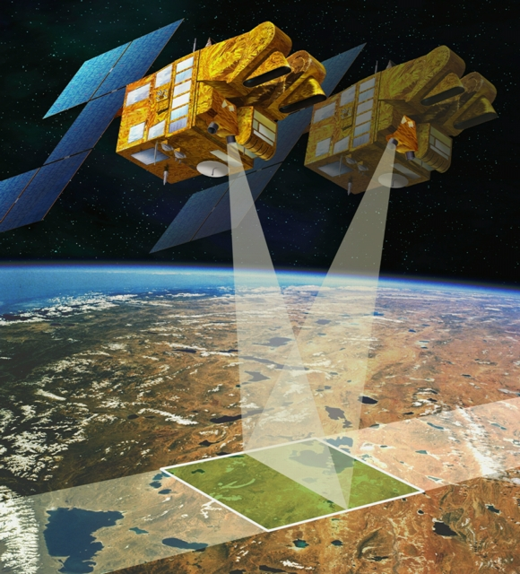

La télédétection désigne, dans son acception la plus large, la mesure ou l'acquisition d'informations sur un objet ou un phénomène, par l'intermédiaire d'un instrument de mesure n'ayant pas de contact avec l'objet étudié.
C'est l'utilisation à distance de n'importe quel type d'instrument (par exemple, d'un avion, d'un engin spatial, d'un satellite ou encore d'un bateau) permettant l'acquisition d'informations sur l'environnement. On fait souvent appel à des instruments tels qu'appareils photographiques, lasers, radars, sonars, lidars, sismographes ou gravimètres.
La télédétection moderne intègre normalement des traitements numériques mais peut tout aussi bien utiliser des méthodes non numériques.
La télédétection spatiale, dans le domaine de l'astronautique, est l'ensemble des connaissances et des techniques utilisées pour déterminer les caractéristiques de la surface et de l'atmosphère de la Terre ou d'une autre planète, par des mesures effectuées à partir d'un engin spatial évoluant à distance convenable de cette dernière.
Le terme correspondant en anglais est remote sensing from space.
Ce type de méthode d'acquisition utilise normalement la mesure des rayonnements électromagnétiques émis ou réfléchis des objets étudiés dans un certain domaine de fréquences (infrarouge, visible, micro-ondes).
Ceci est rendu possible par le fait que les objets étudiés (plantes, maisons, surfaces d'eau ou masses d'air) émettent ou réfléchissent du rayonnement à différentes longueurs d'onde et intensités selon leur état. Certains instruments de télédétection utilisent des ondes sonores de façon similaire, et d'autres mesurent des variations dans des champs magnétiques ou gravitaires.
Alors que l'astronomie pourrait être considérée comme de la télédétection (poussée à l'extrême), le terme télédétection est généralement réservé aux observations terrestres.